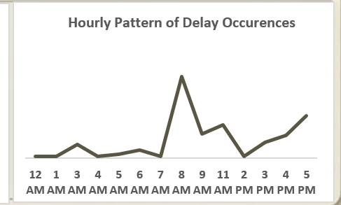
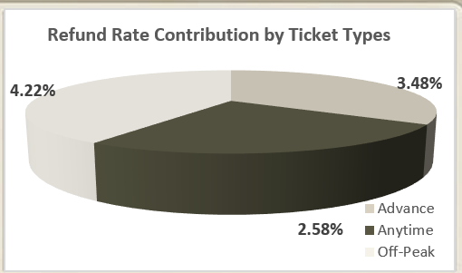
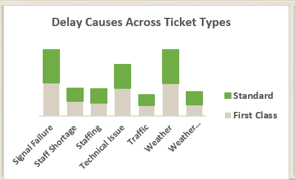

Deep Dive
Key Insights
Each insight below shows exactly what I found in the data, why it matters to the business, and what I recommended to fix it.
Insight 01
Delays are concentrated at 2 stations — Manchester Piccadilly and London Euston — pulling up the whole network average
Manchester Piccadilly averages 60 minutes of delay. London Euston averages 54 minutes. These two stations alone significantly pull up the network-wide average of 42 minutes. Edinburgh sits at the other end with just 15 minutes average delay. This tells us the delay problem is not evenly distributed — it is concentrated, which means fixing it doesn't require a network-wide overhaul. Signal failure is the #1 cause at every station without exception, which confirms this is an infrastructure issue, not a management or staffing one.
→ Prioritise signal system upgrades at Manchester Piccadilly and London Euston first. Then move to King's Cross, York, Liverpool, Paddington, and Reading — these 7 stations address the majority of total network delay minutes.

Insight 02
Delays peak on Wednesdays at 8–9 AM — driven by commuter demand, not system breakdown
Wednesday records the highest delays of the week, followed by Tuesday and Thursday. This pattern aligns exactly with peak journey volume on those days — not with any increase in system faults. The 8–9 AM delay spike similarly matches commuter rush hour, with weather compounding the effect at 8 AM specifically. This is the most important finding in the project: it means delays are predictable and manageable. Teams can plan for them in advance instead of reacting after they happen.
→ Scale staffing and maintenance monitoring specifically on Tuesday–Thursday and during 8–9 AM. Deploy proactive weather protocols using 24-hour forecasts before morning operations begin.

Insight 03
Off-Peak passengers face the worst delays and the highest refund rate — but receive no automatic compensation
Off-Peak ticket holders experience the longest average delays at 49 minutes (vs Advance: 42 min, Anytime: 38 min) and have the highest refund request rate at 4.22%. Despite facing the worst service outcome, they receive no automatic relief — they must actively request refunds, and many don't bother. This is a hidden service failure in the data: the passengers most hurt by delays are the ones least likely to get compensation for it.
→ Introduce automatic threshold-based refunds for Off-Peak passengers when delays exceed 30 minutes. This reduces complaints, rebuilds trust, and costs less than reactive dispute handling after the fact.

Insight 04
Both Standard and First-Class passengers face identical delay causes — this is a network infrastructure problem, not a service-tier problem
Both Standard and First-Class passengers face the exact same delay causes in the exact same order: signal failure first, weather second. There is no meaningful difference by ticket class in what causes their delays. This rules out service-level explanations and confirms that the problem is entirely at the infrastructure and scheduling layer. Fixing signal failure helps every passenger on the network equally, regardless of what they paid for their ticket.
→ Roll out real-time SMS and app delay alerts uniformly to all passengers. There should be no information gap between ticket classes when it comes to delay notifications.
